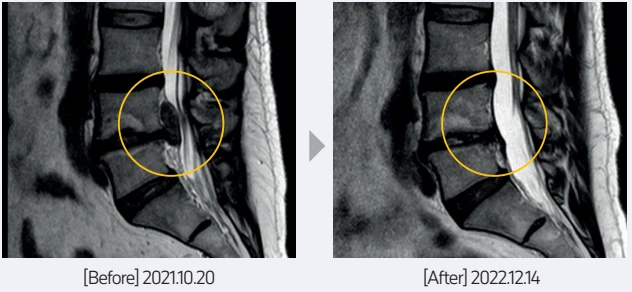
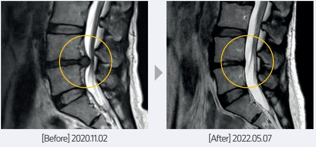
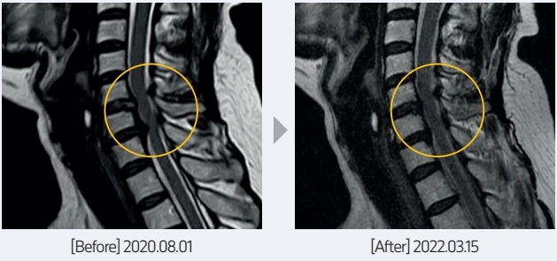
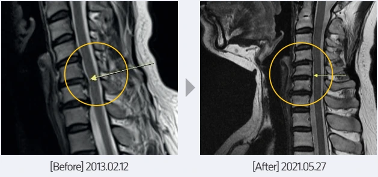

허리디스크 사례 1

좌측 골반 통증으로 보행 시 다리를 뻗기 어렵고, 심한 요통·종아리 통증으로 자세를 바꾸기 어려웠습니다. 요추 4번과 5번 사이의 디스크 탈출이 관찰되었습니다. 치료 후 탈출 디스크의 용적 감소와 흡수로 신경 압박이 호전되었습니다.
허리디스크 사례 2

수술 권유를 받았으나 비수술 치료를 원해 내원했습니다. 운전 후 발생한 심한 통증과 다리 저림으로 거동이 힘들었으며 요추 4번과 5번 사이의 디스크 탈출이 관찰되었습니다. 치료 후 탈출 디스크의 용적 감소와 흡수로 신경 압박이 해소되었습니다.
목디스크 사례 1

다른 병원에서 2~3년간 치료했으나 증상이 지속되었습니다. 견갑골·후경부·승모근 통증과 두통이 심했으며 경추 6번과 7번 사이의 디스크 탈출이 관찰되었습니다. 치료 후 탈출 디스크의 용적 감소와 흡수로 신경 압박이 호전되었습니다.
목디스크 사례 2

학교 식당 근무로 고개를 숙이거나 팔을 많이 사용하던 환자입니다. 2012년 말부터 좌측 팔 통증이 시작되었고, 경추부 통증과 왼쪽 상지 저림·통증이 심해 수술 권유를 받았으나 비수술 치료를 원했습니다. 경추 5번과 6번 사이의 디스크 탈출이 관찰되었으며 치료 후 탈출 디스크의 크기가 줄었습니다.